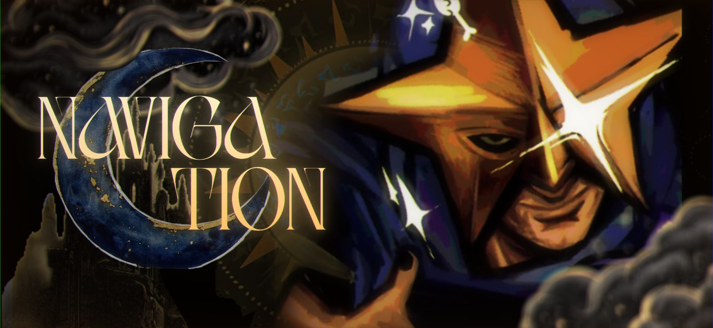

Добро пожаловать в город будущего, возведённый компанией S.T.A.R. (Scientific Therapeutics and Augmentation Research) в самом сердце Америки. Здесь каждый житель получает шанс на лучшую жизнь — без забот, без ограничений, без страха. Здесь ваша мечта стать супером может стать реальностью.
Присоединяйтесь к тысячам счастливых граждан, которые уже сделали свой выбор. Ваш звёздный час ждёт вас.
Стар-парк — это автономное «государство» внутри мегаполиса, спроектированное по последнему слову технологий. Кристаллические формации, пронизывающие парк, создают уникальную энергетическую среду, которая раскрывает потенциал каждого человека.
Программа «Стажировка Стар» — это путь к обретению сверхспособностей. Под руководством опытных наставников вы пройдёте курс адаптации и, возможно, станете одним из суперов — элиты нашего парка.
Пятёрка — легендарная команда лучших суперов Стар-парка. Каждый год проводится отбор, и у вас есть шанс присоединиться к их числу. Следите за анонсами.
Каждый уголок Стар-парка продуман до мелочей, чтобы ваша жизнь была комфортной и яркой.
Центральная арена, где проходят все бои и соревнования. Ежегодные отборы в Пятёрку и в число участников Стар — главные события парка. Трибуны вмещают тысячи зрителей. Для жителей Стар-парка вход бесплатный, для гостей — билеты по специальной цене. Центральная сцена принимает все ключевые мероприятия.
Самое роскошное и престижное развлекательное место в Стар-парке. Улицы забиты барами, кафе, ресторанами, тирами и тематическими магазинами, мероприятия для ставок на соревнования Суперов. Для суперов предусмотрен отдельный бар с особым доступом.
Комфортабельное жильё для всех резидентов Стар-парка. Современные апартаменты с полным доступом к инфраструктуре. Чем выше ваш статус, тем ближе вы живёте к Сердцу парка. Для участников Стар и членов Пятёрки предусмотрены отдельные резиденции.
Горки, лабиринты зеркал, свободное падение на канате, виртуальная арена — всё это ждёт вас в парке аттракционов. Адреналин гарантирован, а благодаря кристаллической энергии ощущения становятся ещё более яркими.
Открытая больница Стар-парка и одновременно закрытый сектор со всеми исследованиями и разработками препарата. Здесь вы можете пройти полное медицинское обследование и получить допуск к программе «Стажировка Стар». Доступ в закрытый сектор строго ограничен.
Уникальный биом с дикими растениями, некоторые из которых приобрели необычные свойства под воздействием кристаллов. Идеальное место для прогулок, медитаций и восстановления сил. Говорят, что некоторые растения здесь светятся в темноте.
Мемориальный парк с памятниками первым суперам и главному директору S.T.A.R. Тематические мини-магазинчики и музей расскажут вам историю парка. Идеальное место для тех, кто хочет прикоснуться к легенде.
По всему Стар-парку, особенно около Сердца, расположены сцены для музыкантов и выступлений суперов. Концерты, шоу, публичные демонстрации способностей — всё это часть жизни парка. Стань звездой не только в бою, но и на сцене.
Элита Стар-парка. Пятеро избранных.
Пятёрка — это пятеро сильнейших суперов Стар-парка, избранных из числа участников Стар. Они — лицо парка, его легенды и защитники. Но статус этот не вечен: каждый год проводится отбор, в ходе которого любой участник Стар может бросить вызов действующим членам Пятёрки. Победитель занимает место побеждённого, а тот отправляется в отставку — или возвращается, чтобы доказать, что его рано списали.
Иногда место освобождается по иным причинам: по собственному желанию, по решению руководства S.T.A.R. или в результате травм, несовместимых с продолжением карьеры. Тогда проводится экстренный отбор, и новый чемпион входит в круг избранных.
Хотите стать одним из них? Путь в Пятёрку начинается со статуса участника Стар. Узнайте больше в разделе «Как попасть».
Ваш путь к звёздному часу начинается здесь. Ознакомьтесь с этапами отбора и мероприятиями, которые проводятся в парке.
Подайте онлайн-заявку на официальном канале S.T.A.R. Укажите ваши данные, мотивацию и ожидания от жизни в Стар-парке.
После предварительного отбора вас пригласят на собеседование с представителями компании. Оно проходит в комфортной обстановке.
Полное медицинское обследование в лабораторном комплексе парка. Это необходимо для определения совместимости с кристаллической средой.
Первые недели в парке — период адаптации. Вы осваиваетесь, знакомитесь с локациями и правилами.
Стать членом пятёрки могут только участники Стар — суперы, прошедшие стажировку и доказавшие свою силу. Ежегодный отбор включает:
Соревнования на арене «Сердце парка» в присутствии тысяч зрителей.
Демонстрация уникальных навыков перед судейской коллегией.
Проверка умения работать в команде с другими участниками Стар.
Финальное решение принимают действующие члены Пятёрки совместно с руководством S.T.A.R.
| Событие | Локация | Доступ |
|---|---|---|
| Открытие сезона — шоу суперов | Сердце парка | Бесплатно для резидентов |
| Квалификационные бои | Сердце парка | По билетам |
| Выставка достижений S.T.A.R. | Парк имени Стар | Свободный |
| Ночной концерт на Неоновом бульваре | Неоновый бульвар | Свободный |
| Полуфинал отбора в Пятёрку | Сердце парка | По билетам |
| Финал отбора в Пятёрку | Сердце парка | Бесплатно для резидентов |